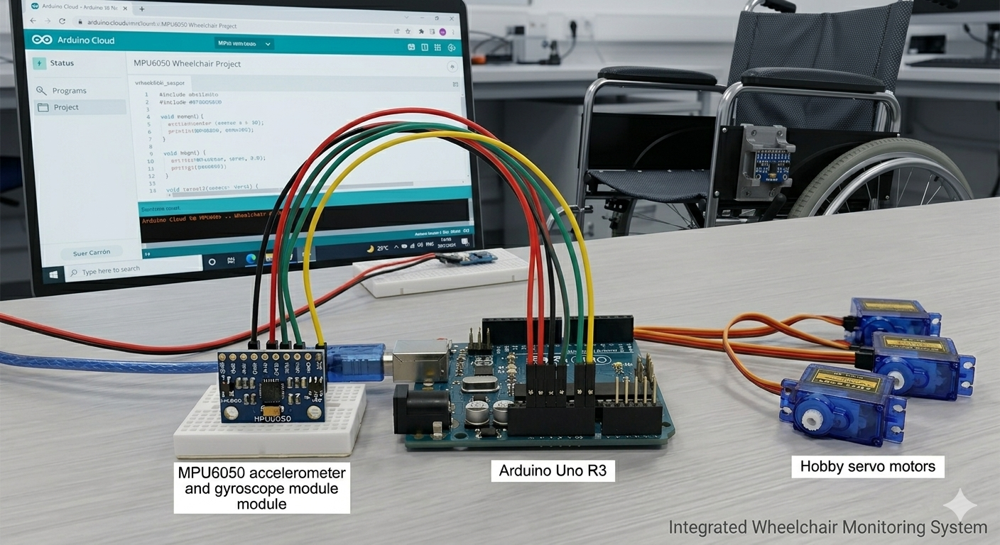

SEMÁFORO INTELIGENTE - SENSOR IR

Investigar como um semáforo inteligente com sensor infravermelho (IR) pode detectar a presença de veículos e pedestres, controlando automaticamente os sinais para melhorar a segurança e o fluxo do trânsito.
Foi montado um sistema com LEDs representando o semáforo: verde, amarelo e vermelho para carros, e verde e vermelho para pedestres. Um sensor IR foi utilizado para detectar a presença de pessoas. Quando o sensor identifica movimento, o sistema altera o sinal dos carros de verde, para amarelo e depois vermelho, e quando o semaforo dos carros esta vermelho, o dos pedstres fica verde.
• Sem presença detectada: semaforo verde para carros
• Pedestre detectado: sinal verde para pedestres
• Mudança de sinal dos carros: passagem pelo amarelo antes do vermelho
O sistema envolve conceitos de ondas infravermelhas e detecção de movimento. O sensor IR emite radiação que é refletida pelos objetos, permitindo identificar presença. Com base nesses dados, o sistema controla o tempo dos sinais, otimizando o fluxo e reduzindo o tempo de espera. Também se relaciona com organização do movimento e segurança no trânsito.
Investigar como ocorre o movimento em diferentes condições, incluindo acessibilidade com cadeira de rodas e deslocamento com os olhos vendados.
Foram realizados testes de locomoção andando normalmente, com os olhos vendados e utilizando cadeira de rodas.
| Experimento | Tempo (s) | Distância (m) | Velocidade Média (m/s) |
|---|---|---|---|
| Andando | 10,8 | 8,92 | 0,83 |
| Olhos Vendados | 19,03 | 8,92 | 0,47 |
| Cadeira de Rodas | 11,33 | 8,92 | 0,79 |
Os dados mostram que a menor velocidade ocorreu com olhos vendados, evidenciando a importância da visão no controle do movimento.
Os resultados se relacionam com velocidade média e movimento uniforme. A ausência de visão prejudica a orientação, enquanto a cadeira de rodas apresentou um desempenho próximo ao movimento normal.

Investigar como um sensor de movimento (MPU6050) pode detectar inclinações e controlar automaticamente motores para estabilizar uma cadeira de rodas.
Foi utilizado um sensor MPU6050 conectado a um Arduino para medir a inclinação nos eixos X, Y e Z. Esses valores foram convertidos em comandos para servomotores, que ajustam a posição da estrutura para manter o equilíbrio. Os dados foram acompanhados pelo Monitor Serial.
• Sem inclinação: sistema equilibrado (90° nos eixos)
• Inclinação leve: pequenas correções nos motores
• Inclinação média: ajustes moderados
• Inclinação forte: correção máxima dos servos
• Retorno ao centro: estabilização completa
O sistema está relacionado a conceitos de movimento angular e equilíbrio. O sensor identifica a inclinação e os servos aplicam força contrária para restaurar a estabilidade, demonstrando o uso de torque e controle de movimento.
Pontos Positivos:
1. Autonomia: Toma decisões sozinho.
2. Evolução: Aprende com os erros.
3. Interação: Entende voz e gestos.
Pontos Negativos:
1. Custo: Sensores e chips são caros.
2. Energia: Consome muita bateria.
3. Difícil: Exige programação complexa.

| Área | Benefícios | Malefícios |
|---|---|---|
| Agricultura |
• Redução de agrotóxicos e água • Detecção precoce de pragas • Maior produtividade das safras |
• Alto custo de implementação • Dependência de tecnologia/internet • Redução de mão de obra humana |
| Segurança e defesa |
• Identificação rápida de suspeitos • Segurança em aeroportos e fronteiras • Auxílio em buscas de desaparecidos |
• Viés algorítmico (erros de IA) • Invasão de privacidade e vigilância • Risco de perseguição política |
| Serviços Públicos e cidadania |
• Triagem eficiente de reciclagem • Redução de lixo em aterros • Otimização da gestão urbana |
• Alto consumo de energia elétrica • Descarte de trabalhadores manuais • Custo elevado de manutenção |